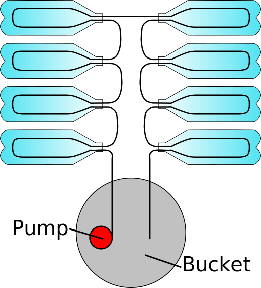

The goal of this project is to get me started with building actual energy collection devices. Ideally this project should take the water source and achieve elevated temperatures.
A simple design was decided upon for my first solar thermal project. A hot water pump will take water from a source (bucket) and pump it through rubber tubing that goes through empty/cleaned 2L bottles and deposit the water back in the source.
After deciding on using 8 2L bottles the length was determined to be around 30 feet. This allows ~2 feet per bottle, a foot between each bottle and ~2-3 feet between the bottle array and the water source (bucket)
|  |
| Item | Cost |
|---|---|
| Temperature Sensor | $6.99 |
| 5 Gallon Bucket | $9.95 |
| Hot Water Pump | $21.98 |
| Plastic/Rubber Tubing | $31.39 |
| 48 Count AA Batteries | $12.09 |
| 8 Recycled 2L Bottles | $--.-- |
| Total Cost | $82.40 |
Parts Research
Temperature Sensor
- There are different thermometers available that could meet this purpose
- Fish tank thermometer
- Cooking/grilling thermometer
- Going with a grilling thermometer because it will probably be better suited for elevated temperatures that I plan to achieve with the thermal collector system
Hot Water Pump
- Looking at 12V water pumps because they're smaller and more economical
- Going to need to find a way to power the pump
- It is unclear what size the included brass couplers are
Rubber Tubing
- Guessing I'll need 30 feet (see assumptions/design)
- Lots of tubing only available in 10ft, 25ft, 50ft lengths
- Decided on a 1/4th in inner diameter tube with 20 extra feet just in case
- Hopefully the tube will stretch over the hot water pump opening
- Would be cheaper to buy new brass couplers instead of new tubing if it doesn't fit
Power Supply
- Decided it'd be cheapest to just use the 8 AA battery holder to supply the 12 volts required by the heat pump
- Might long run end up being more expensive if the batteries do not last for long periods of time
The hose doesnt fit the brass couplers that came with the pump
- The hose did not end up fitting the couplers that came with the hot water pump and so a method of attaching them had to be determined
- I was able to get a 1/2" to 1/4" adapter + 1/4" to 1/4" brass coupler to work to attach the hose to the pump
- This was ~$18 for two adapter/coupler sets
- Future Considerations:
- Should try to find a hose with a larger inner diameter to fit the couplers that came with the pump
- Other option would be to find a pump that comes with a smaller diameter coupler to begin with
Putting holes in the bottle caps
- Initially tried scissors but that turned out to be infeasible